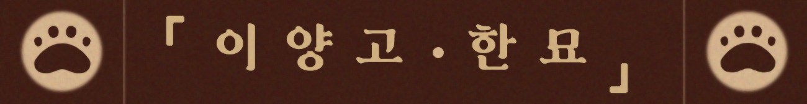
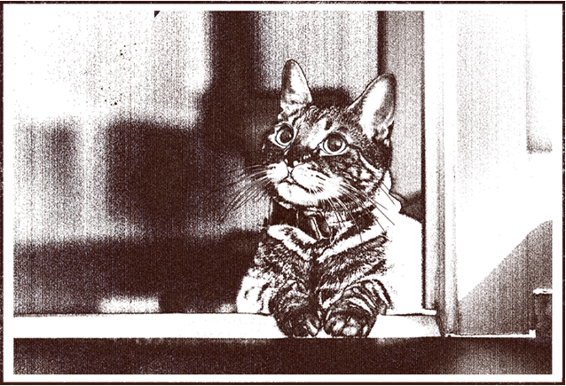
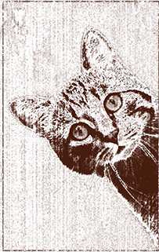

◇ 어여쁜 고양이
고양이들은 언제부터 우리와 함께 살게 되었을까요?
까칠해 보이지만 알고 보면 엉뚱하고 귀여운 모습을 지닌 고양이들.
이들은 우리와 꽤 오랜 시간 공생을 하며 함께 살아온 관계이지만 어디서 왔는지 과거에 사람들과 어떻게 살게 되었으며 어떤 동물로 인식되었는지 잘 알지 못합니다.
우리와 함께 해왔던 고양이들의 역사를 알아봄과 동시에 과거의 고양이들이 사랑받았던 모습들을 함께 알아보세요.

◇묘한 고양이◇